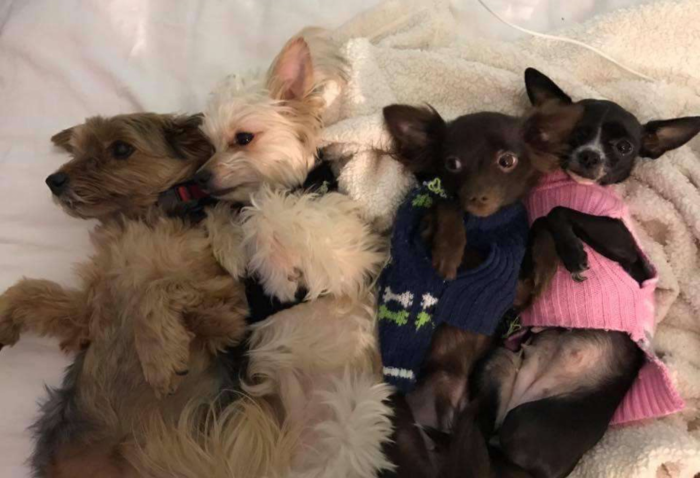

Baby Hero
Hero was born on November 25, 2016. He's a Chihuahua-Teddy Bear mix. He was given to my sister, Stephanie, on Christmas Day after her first dog passed away in March of that year. She was hesitant to take him, feeling that she had "replaced" our first dog, but we all fell in love with Hero that same night.
Young Hero
The days went by, and Hero grew. His fur started changing color, and his awkward and playful personality began to come out. Since his first days with the family were during Winter Break, he got all of the attention and playtime he needed to become a needy rascal. However, Stephanie was planning on moving out to an apartment, and was deciding if she should take Hero or leave him with us. Since there were more of us to give Hero the time and attention he needed, she passed him on to me, and I became his official owner.
Hero Today
Now, Hero is a calm, loving dog, who suddenly bursts into playfulness and excitement at night. He's loved by everyone who meets him, and he makes it clear when he's trying to win people over. He's a scaredy-cat, has a lot of energy, loves greeting people when they come home, and continues to test people's limits, like the toddler he is.

Hero's Favorite Things
Hero loves the outdoors, so when I'm too busy doing things in the house, he likes to sit at the window and watch the world go by. More than that, he loves going on walks - to the point that I have to use the word "stroll" when he's around. Hero also loves toys, especially his fox, and will steal any toy that he sees around the house and take it to his cage in my room.

Finally, Hero loves his family - all owned by my other sister, Carolyn - which consists of his sister Peggy (not blood-related), his son Teddy (blood-related), and his ex-wife Lulu (not blood-related, who has been with other dogs since). Their company gets Hero riled up, and his playtime with them uses up a lot of his extra energy. They're one of the big reasons Hero was passed on to me, too.